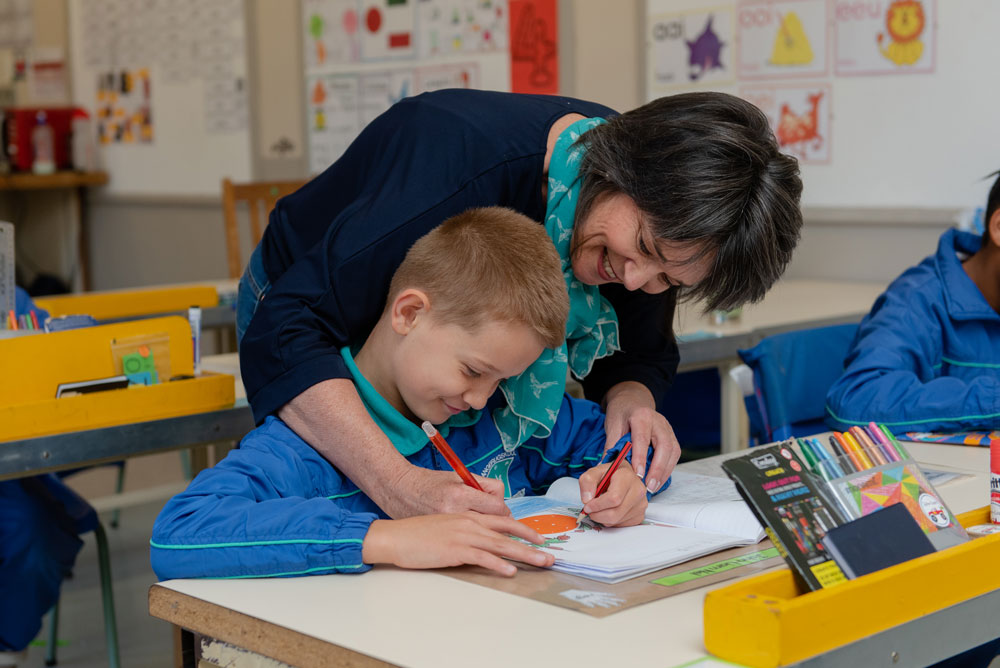
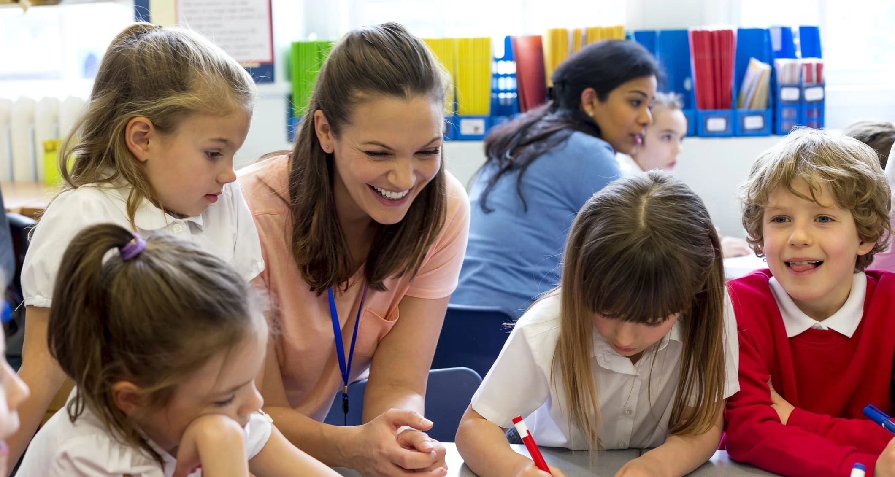
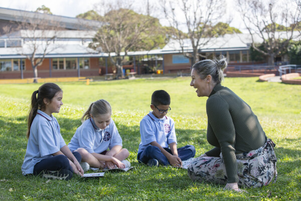
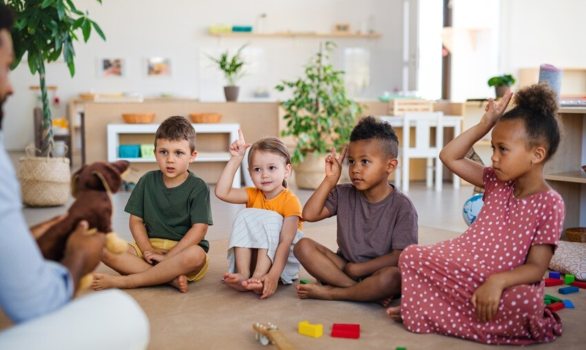

Our Mission
Our mission at Voorpos Primary School is to create a safe, inclusive, and inspiring learning environment where every learner is empowered to reach their full potential. We are committed to delivering high-quality education through dedicated teaching, innovative learning strategies, and strong community partnerships. By fostering discipline, integrity, leadership, and respect, we aim to develop confident individuals who are prepared to contribute positively to society and succeed in an ever-changing world.



Academic Excellence
Structured programs designed to build strong academic foundations.


Sports & Physical Development
Encouraging teamwork, fitness, and competitive spirit.



Learner Support
A safe and supportive environment for every learner.
Our Vision
Our vision at Voorpos Primary School is to provide a supportive and inclusive learning environment where every learner is encouraged to grow academically, socially, and personally. We aim to nurture curious minds, confident learners, and responsible citizens who are prepared to face the future with knowledge and strong values. Through meaningful learning experiences, positive relationships, and community involvement, we strive to help our learners develop the skills and character needed to contribute positively to society.


Building Strong Character
Encouraging honesty, respect, responsibility, and positive values in every learner.


Growing Confident Learners
Helping learners develop confidence, curiosity, and the courage to explore new ideas.



Caring School Community
Fostering kindness, cooperation, and a sense of belonging among all learners.
Latest News
Stay up to date with the latest news, announcements, and events from our school.
👉 Follow us on our official Facebook page for real-time updates:
We regularly post important announcements, events, and school activities on our social media platforms.
Our Sponsors & Partners
We proudly collaborate with organizations that support education, development, and community growth.